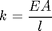

Contents
% Joel Lubinitsky - 02/04/15 % MAE 321 - HW 3.3 clear all close all clc % Problem 3: % A helicopter landing gear consists of a metal framework rather than % the coil spring based suspension system used in a fixed-wing aircraft. % The vibration of the frame in the vertical direction can be modeled by % a spring made of a slender bar, such as the one illustrated in % Figure 1.23 of the textbook. Here l = 0.4 m, E = 20 x 10 ^ 10 N/m ^ 2, % and m = 100 kg. Calculate the cross-sectional area that should be used % if the natural frequency is to be f_n = 600 Hz. % Unknown % Cross-sectional area
Known
length = 0.4; % m modulusYoungs = 20 * 10 ^ 10; % N/m ^ 2 mass = 100; % kg frequencyNaturalHz = 600; % Hz
Calculations
Rod with axial stiffness 
% $$ w_n = \sqrt{\frac{k}{m}} $$ % f_n = w_n / (2 * pi) % % A = (4 * m * l * pi ^ 2 * f_n ^ 2) / E areaCrossSection = (4 * mass * length * pi ^ 2 * frequencyNaturalHz ^ 2) / modulusYoungs % m ^ 2
areaCrossSection =
0.0028